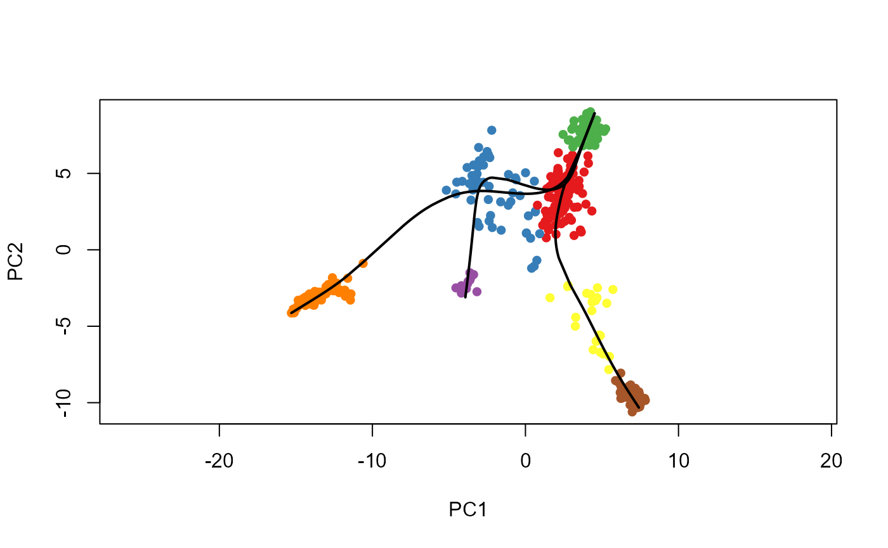
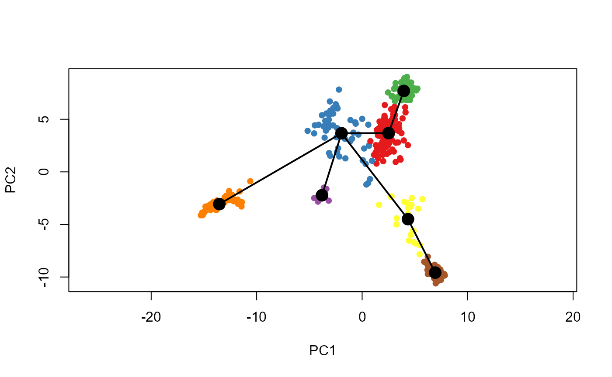
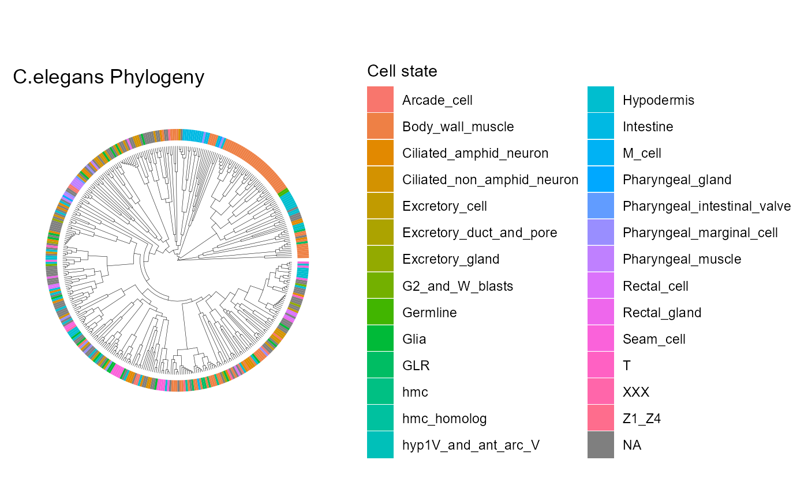
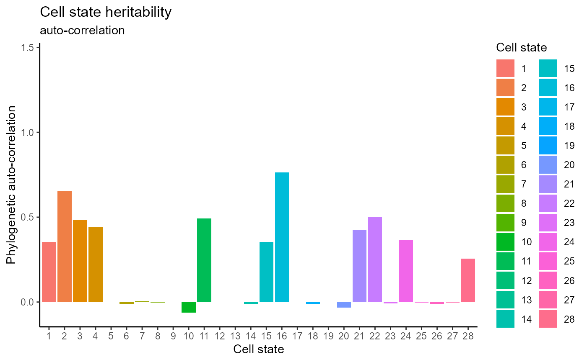
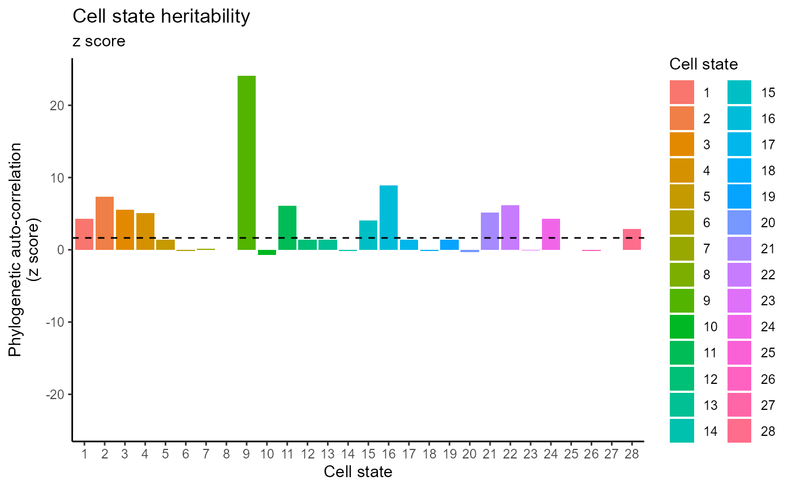
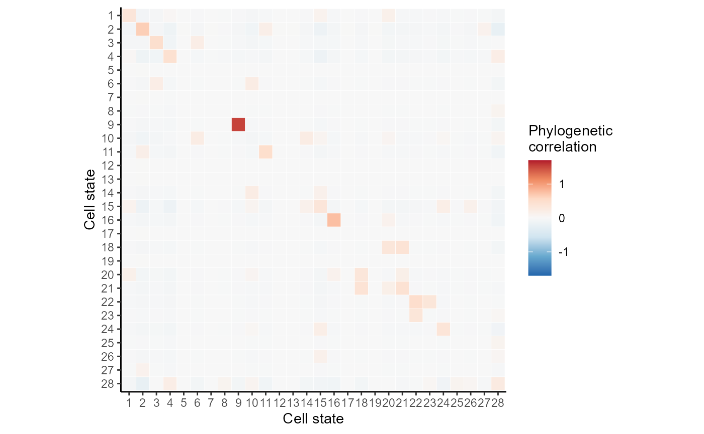

Input Real Cell Division Tree and RNA Read Counts
Load Tree Graph and Metadata
graph <- read_graph("data/C.elegans/cell_lineage_tree.gml", format = "gml")
MetaData <- read.csv("data/C.elegans/MetaData.csv")Extract Tip Labels and Edges
# Extract tip labels at time == 2000
TipLabels <- V(graph)$name[V(graph)$time == 2000]
# Get raw edge list from the graph
raw_edges <- get.edgelist(graph, names = TRUE)
# Remove nodes with only one child (if applicable)
for (i in seq_along(unique(raw_edges[,1]))) {
par <- unique(raw_edges[,1])[i]
child <- raw_edges[raw_edges[,1] == par, 2]
if (length(child) == 1) {
index <- raw_edges[,1] != par
}
}
edges <- raw_edges[index, ]Construct real Phylogenetic Tree from Graph
# Set root time and extract time vector
V(graph)$time_to_parent[1] <- 0
Time <- V(graph)$time_to_parent
# Generate Newick tree text and read the tree
newick_text <- paste0(format_tree_newick("P0", edges), ";")
phy_tree <- ape::read.tree(text = newick_text)
newick_text <- paste0(format_tree_newick_time("P0", edges, Time), ";")
phy_tree <- ape::read.tree(text = newick_text)Filter and Process RNA-Seq Data
# Filter tree tips based on MetaData
ML <- MetaData$random_precise_lineage
tips <- phy_tree$tip.label
drops <- tips[!tips %in% ML]
Celegans_tree <- ape::drop.tip(phy_tree, drops)
Celegans_tree <- ape::chronos(Celegans_tree)##
## Setting initial dates...
## Fitting in progress... get a first set of estimates
## (Penalised) log-lik = -28513163288
## Optimising rates... dates... -28513163288
## Optimising rates... dates... -20753.05
## Optimising rates... dates... -20746.96##
## log-Lik = -20736.35
## PHIIC = 44179.98
# Process RNA-Seq counts
ncells <- length(Celegans_tree$tip.label)
ngenes <- 500
Leaves <- Celegans_tree$tip.label
# Standardize tip labels
Celegans_tree$tip.label <- paste("cell", 1:ncells, sep = "_")
tree_ct <- Celegans_tree
# Create name index mapping original tip names to standardized IDs
name_index <- data.frame(name = Leaves, id = paste("cell", 1:ncells, sep = "_"))
for (i in 1:nrow(name_index)) {
a <- MetaData$cell.type[MetaData$random_precise_lineage == name_index$name[i]]
name_index$cell_type[i] <- names(table(a))[which.max(table(a))]
}
name_index$cell_type <- ifelse(name_index$cell_type == "", NA, name_index$cell_type)Loading and Process Count Matrix
CountMatrix <- read.table("data/C.elegans/RNASeqData.csv", sep = ",")
Count <- CountMatrix[2:nrow(CountMatrix), 4:ncol(CountMatrix)]
CellType <- CountMatrix$V3[2:nrow(CountMatrix)]
CellName <- CountMatrix$V2[2:nrow(CountMatrix)]
Counts <- Count[match(Leaves, CellName), ]
CellTypes <- CellType[match(Leaves, CellName)]
rownames(Counts) <- paste("cell", 1:ncells, sep = "_")
colnames(Counts) <- paste("gene", 1:ngenes, sep = "_")
gene <- t(Counts)Constructing Cell State Tree (Slingshot)
Defining State Lineages and Prepare Data
sce=SingleCellExperiment(assays=List(counts=gene))
pca=prcomp(log1p(Counts), scale. = FALSE) #log1p(x)=log(1+x)
rd1=pca$x[,1:2]
cl1=Mclust(rd1)$classification
reducedDims(sce)=SimpleList(PCA = rd1)
colData(sce)$GMM=cl1
sce=slingshot(sce, clusterLabels = 'GMM', reducedDim = 'PCA')
state_lineages=slingLineages(sce)
for (l in 1:length(state_lineages)) {
names(state_lineages)[l]=paste0("L",l)
}
state_slingshot=data.frame(cell_id=paste("cell",1:ncells,sep="_"),cluster=as.character(cl1))visualization
# Plot PCA/UMAP with clusters and trajectory lines
plot(reducedDims(sce)$PCA, col = brewer.pal(9, "Set1")[sce$GMM], pch = 16, asp = 1)
lines(SlingshotDataSet(sce), lwd = 2, col = "black")
plot(reducedDims(sce)$PCA, col = brewer.pal(9, "Set1")[sce$GMM], pch = 16, asp = 1)
lines(SlingshotDataSet(sce), lwd = 2, type = "lineages", col = "black")
# Parameters
N_char <- 12
ngenes <- 500
p_ds <- 0.2
r_n <- ceiling(N_char * 0.7)Loading Simulated Intermediate Features and CIFs
load('data/C.elegans/cifs.RData')Processing Simulated Barcode Data
barcodes_all <- cifs[[7]]
barcodes_initial <- barcodes_all[1:ncells, ]
rownames(barcodes_initial) <- paste("cell", 1:ncells, sep = "_")
barcodes_dropout <- LineageCast:::stochastic_dropout(barcodes_initial, p_ds)Barcode Imputation and Grouping by State Lineage
barcodes <- dropout_imputation_alter(barcodes_dropout, N_char, ncells, ceiling(N_char * 0.8))
state <- state_slingshot
sl_info <- state_lineage_info(state_lineages, ncells, state, barcodes)
state_lineage <- sl_info[[1]]
cell_lineages <- sl_info[[2]]
barcodes_lineages <- sl_info[[3]]
state_labels_lineages <- sl_info[[4]]Reconstructing Sub-Cell Division Trees
Trees_initial <- initial_tree_construction(state_lineages, barcodes_lineages)
refined_subtree <- subtree_refinement(Trees_initial, state_lineages, barcodes_lineages,
N_char, state_labels_lineages,
lambda1 = 0.1, lambda2 = 0.9,
maxIter = 100, repeat_time = 10)
bestsubtree <- refined_subtree[[1]]
bestsubtree <- drop_duplicated_tips(bestsubtree, barcodes_lineages, cell_lineages,
state_lineage, alpha = 1.5, beta = 1.5)Decomposition and reassembly of subtrees
subtrees_rootbar <- get_subtree_root_barcodes(bestsubtree, state, barcodes, length(state_lineages))
CM <- common_mutation_matrix(subtrees_rootbar)
Nodes_rank <- subtrees_rank(CM)[[1]]
Nodes_weight <- subtrees_rank(CM)[[2]]
subsubtrees <- decompose_subtrees(bestsubtree, state_slingshot, barcodes, length(state_lineages))
Tree_Merge <- merge_subcell_trees_ordered(CM, Nodes_rank, Nodes_weight, subsubtrees,
bind_tree_list = list(), nsubtree = 1)
Tree_Groups <- group_subcell_trees(CM, Nodes_rank, Nodes_weight, subsubtrees,
bind_tree_list = list(), nsubtree = 1)Evaluation
cat("Nye Similarity (higher is better): ", TreeDist::NyeSimilarity(tree_ct, Tree_Merge, normalize = TRUE), "\n")## Nye Similarity (higher is better): 0.4277195
cat("Tree Distance (lower is better): ", TreeDist::TreeDistance(tree_ct, Tree_Merge), "\n")## Tree Distance (lower is better): 0.6552464## RF Distance (lower is better): 0.882199Downstream Analysis
tree <- phylogenetic_tree(Tree_Merge, N_char, barcodes[match(Tree_Merge$tip.label, rownames(barcodes)), ],
ncells = NULL, Nnodes = NULL, edges = NULL)##
## Setting initial dates...
## Fitting in progress... get a first set of estimates
## (Penalised) log-lik = -18301.69
## Optimising rates... dates... -18301.69
## Optimising rates... dates... -840.22
## Optimising rates... dates... -827.1494
## Optimising rates... dates... -827.1494
##
## log-Lik = -799.7401
## PHIIC = 3914.66Mapping Cell States and Visualize
tree$states_chr <- name_index$cell_type[match(tree$tip.label, state_slingshot$cell_id)]
tree$states <- as.numeric(factor(name_index$cell_type[match(tree$tip.label, state_slingshot$cell_id)]))
tree$states[is.na(tree$states)] <- max(tree$states, na.rm = TRUE) + 1
tree_tidy <- full_join(Tree_Merge, tibble(label = tree$tip.label, state = as.factor(tree$states_chr)), by = "label")
tree_tidy@phylo$edge.length <- tree$edge.length
p <- ggtree(tree_tidy, layout = "circular", size = 0.1) +
geom_fruit(geom = geom_tile, aes(fill = state),
col = "white", offset = 0.1,
width = 0.1, lwd = 0) +
ggtitle("C.elegans Phylogeny") +
labs(fill = "Cell state")
p
Phylogenetic Auto-correlation Analysis
W <- one_node_tree_dist(tree)
X <- catMat(tree$states)
treexcor <- xcor(X, W)
tree_phy_cor <- treexcor$phy_cor
Idf <- reshape2::melt(tree_phy_cor, value.name = "I")
Zdf <- reshape2::melt(treexcor$Z.score, value.name = "Z")
df <- full_join(Idf, Zdf, by = c("Var1", "Var2"))
df <- df %>% mutate(Var1 = as.factor(Var1), Var2 = as.factor(Var2))Generating Heritability Bar Plots
herit1 <- df %>%
filter(Var1 == Var2) %>%
ggplot(aes(x = Var1, y = I, fill = Var1)) +
geom_bar(stat = "identity") +
ylim(c(-0.07, 1.45)) +
theme_classic() +
labs(fill = "Cell state", y = "Phylogenetic auto-correlation", x = "Cell state") +
ggtitle("Cell state heritability", subtitle = "auto-correlation")
maxz <- max(abs(df$Z))
herit2 <- df %>%
filter(Var1 == Var2) %>%
ggplot(aes(x = Var1, y = Z, fill = Var1)) +
geom_bar(stat = "identity") +
ylim(c(-maxz, maxz)) +
theme_classic() +
labs(fill = "Cell state", y = "Phylogenetic auto-correlation\n(z score)", x = "Cell state") +
geom_hline(yintercept = qnorm(0.05, lower.tail = FALSE), col = "black", lty = 2) +
ggtitle("Cell state heritability", subtitle = "z score")
herit1
herit2 
Plotting Heatmap of Phylogenetic Correlation
df %>%
ggplot(aes(x = Var1, y = Var2, fill = I)) +
geom_tile(col = "white") +
scale_fill_distiller(palette = 5, type = "div", limits = c(-1.7, 1.7)) +
theme_classic() +
scale_y_discrete(limits = rev) +
labs(fill = "Phylogenetic\ncorrelation", x = "Cell state", y = "Cell state") +
theme(aspect.ratio = 1)
leaf_states<-name_index$cell_type
names(leaf_states) <- name_index$id
depth_df <- compute_node_depths(Tree_Merge)
states <- c('Arcade_cell', 'Body_wall_muscle', 'Ciliated_amphid_neuron', 'Ciliated_non_amphid_neuron', 'Glia', 'Hypodermis', 'Intestine', 'Seam_cell')
#H_path <- compute_entropy_path(Tree_Merge, leaf_states, "Body_wall_muscle" )
entropy_path_list <- lapply(states, function(cell_type) {
df <- compute_entropy_path(Tree_Merge, leaf_states, cell_type)
df$cell_type <- cell_type
return(df)
})
entropy_path_combined <- do.call(rbind, entropy_path_list)
theme_set(theme_light())
ggplot(entropy_path_combined, aes(x = depth, y = entropy ))+
stat_smooth(method = "loess", color = "#7C4296", size = 0.7) +
geom_point(color = "#C692C0", alpha = 1)+
theme(axis.text.x = element_text(angle =45, vjust =1, hjust =1))+
labs(x ="Depth", y ="Entropy")+
facet_wrap(~ cell_type, nrow = 2, ncol = 4)+
theme(axis.text = element_text(color = "black", size = 5.5, family = 'Arial'),
axis.title = element_text(family = 'Arial', size = 6),
strip.background = element_rect(fill = "#DCDDDD"),
strip.text = element_text(family = "Arial", face = "bold", color = "black",
hjust = 0, size = 6))+
theme(plot.margin=unit(c(3.5, 1, 3.5, 1),'cm'))+
theme(panel.grid.major = element_line(color = "#DCDDDD", size = 0.25),
panel.grid.minor = element_line(color = "#EFEFEF", size = 0.1))
entropy_path_list <- lapply(states, function(cell_type) {
H_slope <- compute_entropy_slope(tree, leaf_states, cell_type, interval = 3)
slope_df <- data.frame(id = 1:length(H_slope), slope = H_slope, cell_type = cell_type, sign_label = sign(H_slope))
slope_df$sign_label <- factor(sign(slope_df$slope), levels = c(-1, 0, 1),
labels = c("neg", "zero", "pos"))
return(slope_df)
})
entropy_slope_combined <- do.call(rbind, entropy_path_list)
ggplot(entropy_slope_combined, aes(x = id, y = cell_type)) +
geom_point(aes(size = abs(slope), color = sign_label), shape = 16) +
scale_color_manual(values = c("pos" = "#F29537", "neg" = "#90C3DA", "zero" = "grey")) +
theme(axis.text.y = element_text(angle = 0, vjust = 1, hjust = 0, size = 6),
axis.text.x = element_text(color = "black", size = 6, family = 'Arial'),
strip.background = element_rect(fill = "#DCDDDD"))+
theme(plot.margin=unit(c(4.5, 0.5, 4.5, 0.5),'cm'))+
labs(x = NULL, y = NULL)+
theme(panel.grid.major = element_line(color = "#DCDDDD", size = 0.25),
panel.grid.minor = element_line(color = "#EFEFEF", size = 0.1))